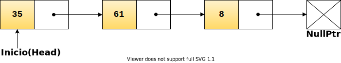

<!DOCTYPE html>
<html lang="en">
  <head>
    <meta charset="utf-8" />
    <meta name="viewport" content="width=device-width, initial-scale=1.0, maximum-scale=1.0, user-scalable=no" />

    <title>Listas Enlazadas</title>
    <link rel="stylesheet" href="./dist/reveal.css" />
    <link rel="stylesheet" href="./dist/theme/league.css" id="theme" />
    <link rel="stylesheet" href="./css/highlight/zenburn.css" />
    <link rel="stylesheet" href="./_assets/slides/css/filminas.css" />

  </head>
  <body>
    <div class="reveal">
      <div class="slides"><section  data-markdown><script type="text/template">
# Listas Enlazadas

<small>Created by
    <a href="https://t.me/rmarku" target="_blank">
        <i class="fab fa-telegram-plane"></i>rmarku
    </a>
</small>

</script></section><section  data-markdown><script type="text/template">
# Listas Enlazadas

Las listas enlazadas son una Estructura de datos del grupo de los Contenedores. Permite
guardar datos y poder recuperarlos  más adelante.


</script></section><section  data-markdown><script type="text/template">

## Nodo

El nodo es la estructura fundamental de la lista. Este esta formado por dos partes. El dato que se desea guardar y un
puntero al siguiente nodo.


</script></section><section  data-markdown><script type="text/template">

## TDA Nodo

Como toda estructura de datos, el nodo consta de datos o atributos y acciones o métodos.

#### Atributos

* `int data;`
  * Puntero al siguiente nodo
* `Node *next;`
  * Puntero al siguiente nodo


</script></section><section  data-markdown><script type="text/template">

## TDA Nodo

#### Métodos

<small>

* `int getData()`
  * Devuelve el dato interno al nodo
* `void setData(int d)`            	
  * Cambia el dato interno del nodo          	
* `Node* getNext()`                	
  * Devuelve el puntero al nodo siguiente             	
* `void setNext(Node *n)` 	
  * Remplazar puntero al siguiente nodo      	

</small>

</script></section><section  data-markdown><script type="text/template">

## Listas Enlazadas

Una lista enlazada es una estructura de datos en la que cada elemento (**nodo**) tiene dos partes, uno con información
 (un valor de tipo genérico, dato, info,etc.) y el otro con la **dirección** del nodo siguiente.


</script></section><section  data-markdown><script type="text/template">

## TDA Lista Enlazada

Como toda estructura de datos, la lista enlazada consta de datos o atributos y acciones o métodos.

#### Atributos

* `Node *inicio;`
  * Puntero al primer nodo de la lista               	


</script></section><section  data-markdown><script type="text/template">

## TDA Lista Enlazada

#### Métodos

<small>

* `void insert(int pos, int dato)`
  * Insertar dato a la lista en el lugar pos
* `void remove(int pos)`            	
  * Remover dato a la lista                  	
* `int get(int pos)`                	
  * Obtener dato en la lista                 	
* `void replace(int pos, int dato)` 	
  * Remplazar dato en la lista               	
* `int find(int dato)`              	
  * Buscar un dato en la lista               	
* `bool isEmpty()`                  	
  * Ver si está vacía la lista               	

</small>

</script></section><section  data-markdown><script type="text/template">
## Lista Enlazada
## A implementar.
</script></section></div>
    </div>

    <script src="./dist/reveal.js"></script>

    <script src="./plugin/markdown/markdown.js"></script>
    <script src="./plugin/highlight/highlight.js"></script>
    <script src="./plugin/zoom/zoom.js"></script>
    <script src="./plugin/notes/notes.js"></script>
    <script src="./plugin/math/math.js"></script>
    <script>
      function extend() {
        var target = {};
        for (var i = 0; i < arguments.length; i++) {
          var source = arguments[i];
          for (var key in source) {
            if (source.hasOwnProperty(key)) {
              target[key] = source[key];
            }
          }
        }
        return target;
      }

      // default options to init reveal.js
      var defaultOptions = {
        controls: true,
        progress: true,
        history: true,
        center: true,
        transition: 'default', // none/fade/slide/convex/concave/zoom
        plugins: [
          RevealMarkdown,
          RevealHighlight,
          RevealZoom,
          RevealNotes,
          RevealMath
        ]
      };

      // options from URL query string
      var queryOptions = Reveal().getQueryHash() || {};

      var options = extend(defaultOptions, {"controls":true,"progress":true,"slideNumber":true}, queryOptions);
    </script>

    <script src="./_assets/slides/js/pruebas.js"></script>
    <script src="./_assets/slides/js/init.js"></script>

    <script>
      Reveal.initialize(options);
    </script>
  </body>
</html>
